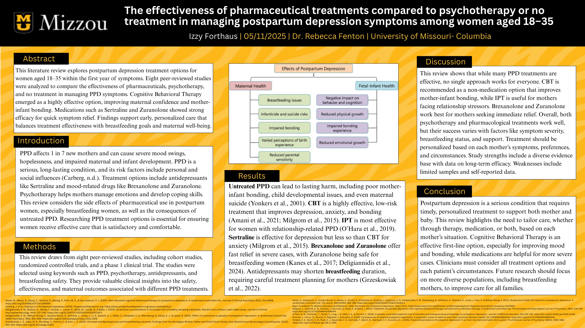
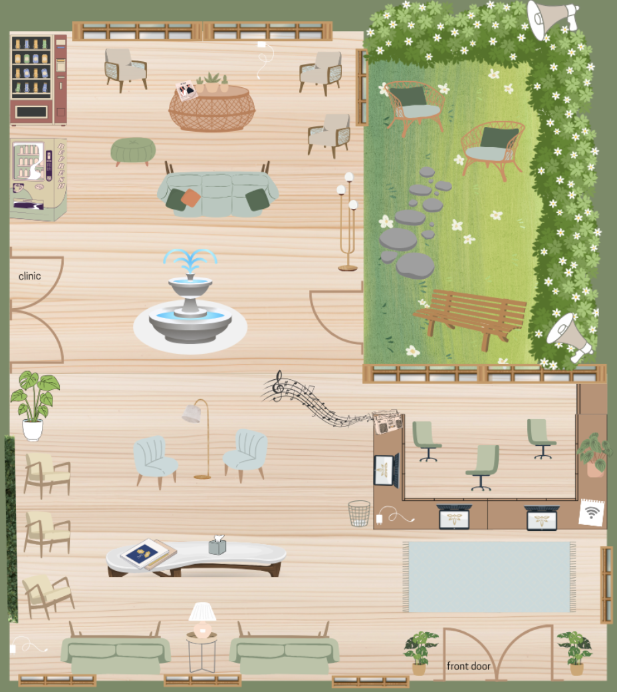

Notable Projects
Health Sciences Project Overview
| Project Title | Focus Area | Course | Semester |
|---|---|---|---|
| Postpartum Depression Literature Review Poster | Health Education, Research and analysis, Patient Care | Introduction to The Research Process and Evidence Base -Writing Intensive | Spring 2025 |
| The Impact of the Fee-For-Service Payment Method on Patient Care | Healthcare Policy, Economics, Quality of Care | Healthcare Management | Fall 2024 |
| The Healing Waiting Room | Health Promotion, Health Environment Design, Patient-Centered Care | Humanism and Health Literacy | Fall 2024 |
Competency 1: Health Education
Postpartum Depression Literature Review Poster
This project aimed to translate complex medical research into an accessible educational format to educate my peers about treatment options for postpartum depression (PPD) in women aged 18–35. I reviewed eight peer-reviewed studies and developed a professional research poster highlighting key findings on pharmaceutical and psychotherapy treatments. The poster focused on how different interventions affect maternal and infant health, including impacts on bonding and breastfeeding. I presented my findings to peers, explaining the research process, comparing treatment outcomes, and emphasizing the importance of patient-centered care in addressing PPD.
Reflection: This experience strengthened my ability to communicate medical information clearly and effectively. Strengths of this project are my simplification of medical jargon and the amount of medical evidence used to support my points. A weakness of this project is my lack of exploration into a control group. In completing this project, I learned how to translate academic research into meaningful communication to promote health education. If I did this project again, I would further explore the control group and use more visual aids in my presentation. For this presentation, I used peer-reviewed journal articles from PUBMED, Canva, and a Mizzou research poster template.
Competency 2: Health Policy
The Impact of the Fee-For-Service Payment Method on Patient Care
This project focused on evaluating and communicating the effects of the Fee-for-Service (FFS) payment model on patient care outcomes in the U.S. healthcare system. I conducted a thorough analysis of peer-reviewed studies, government reports, and health policy reviews to assess how the FFS model impacts care quality, patient access, and healthcare costs. In the 18-minute video presentation, I advocated for more effective payment reforms by breaking down the problems with the current system and suggesting practical solutions like performance incentives and adjusted pricing structures. My goal for this project was to raise awareness of how healthcare financing models influence provider behavior, treatment decisions, and patient well-being.
Reflection: One of the strengths of this project was my ability to demonstrate how policy design influences clinical outcomes and healthcare economics using evidence-based arguments. A weakness is not fully exploring the consequences of an adjusted payment system. Through this process, I learned how payment models shape all aspects of healthcare delivery and why advocacy for equitable healthcare policies is necessary. If I were to do the project differently, I would include interviews or quotes from healthcare professionals or policymakers to support my proposals. To complete this project, I used peer-reviewed articles, CMS policy reports, QuickTime video, and Google Slides.
View Slides (PDF)Competency 3: Health Promotion and Design
The Healing Waiting Room
This project involved designing a therapeutic healthcare waiting room using environmental psychology and health promotion strategies. The goal was to create a space that supports both patient and staff comfort, reduces anxiety, and promotes healing. I researched how lighting, sound, nature, color, seating, and design elements influence overall patient well-being. I also incorporated calming color palettes, natural light, ergonomic seating, soundproofing, nature views, and wellness-enhancing features such as fountains, music, healthy vending options, and a garden area for outdoor waiting. The final design aimed to minimize stressors, support immune health, and improve the overall experience for both patients and staff.
Reflection: One of the strengths of this project was my ability to combine evidence-based research with creative design to promote a more compassionate, patient-centered environment. A weakness was the lack of a physical or digital mockup. Through this project, I learned how physical environments influence health outcomes and how intentional design can serve as a tool for health promotion. If I were to do the project differently, I would include a visual rendering or 3D model to communicate the space better. To complete the project, I used peer-reviewed articles, healthcare design standards, research from environmental psychology, Canva, and Google Slides.
 View Slides (PDF)